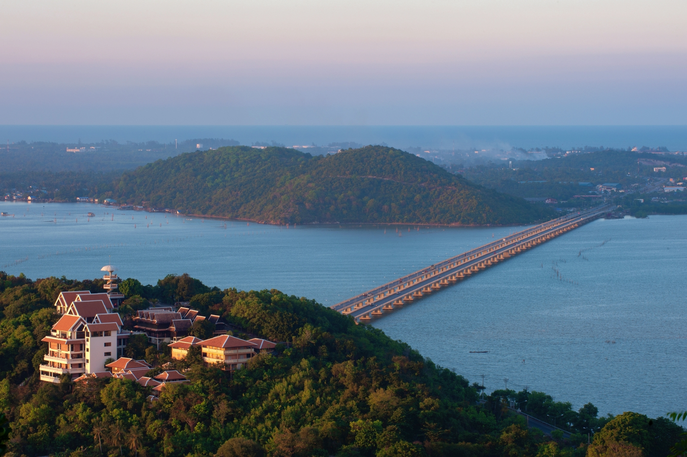

เมืองท่าโบราณ • เมืองสองทะเล • ศูนย์กลางวัฒนธรรมภาคใต้
สงขลาเป็นเมืองที่มีประวัติศาสตร์ยาวนานในฐานะเมืองท่าสำคัญของภาคใต้ ตั้งอยู่บริเวณปากทะเลสาบสงขลาติดกับอ่าวไทย จึงเป็นจุดเชื่อมต่อระหว่างทะเลและแผ่นดิน มีบทบาทสำคัญในการค้าขายและการแลกเปลี่ยนวัฒนธรรมมาตั้งแต่สมัยโบราณ
ชื่อ “สงขลา” มีที่มาจากคำว่า “สิงขร” หรือ “สิงขลา” ซึ่งเกี่ยวข้องกับตำนานสิงห์ และยังสะท้อนถึงความสำคัญในฐานะเมืองท่าที่ติดต่อกับพ่อค้าจากจีน อาหรับ และมลายู

พื้นที่บริเวณนี้เคยอยู่ในอิทธิพลของอาณาจักรศรีวิชัย ซึ่งเป็นศูนย์กลางการค้าทางทะเลสำคัญของภูมิภาค
สงขลาพัฒนาเป็นเมืองท่าสำคัญ มีชุมชนชาวจีนและชาวมลายูอาศัยอยู่ร่วมกัน กลายเป็นศูนย์กลางการค้าและการปกครองของภาคใต้ตอนล่าง
สงขลายังคงเป็นเมืองสำคัญทั้งด้านเศรษฐกิจ การศึกษา (มีมหาวิทยาลัยสงขลานครินทร์) และการท่องเที่ยว โดยเฉพาะชายหาดสมิหลาและทะเลสาบสงขลา
สถานะ:
จังหวัดภาคใต้ตอนล่าง
จุดเด่นทางประวัติศาสตร์:
เมืองท่าโบราณ • วัฒนธรรมผสม
สัญลักษณ์สำคัญ:
นางเงือกทอง • เกาะหนู-เกาะแมว